Herramienta hecha a la medida para la empresa “De la Paz Costemalle”. Sistema en Línea para auditorias donde se previsualizan, organizan y llevan a cabo todos los pasos de un proceso de auditoría, desde la inscripción de usuarios, captura de datos de clientes, delegación de tareas y organización de documentos.
Clasificación:
B2B, ERP, DMS, ECM
Herramientas usadas:


Problemática
Previamente, la organización y delegación del proceso de auditoria se realizaba por medio de documentos, así también la captura de datos se daba en documentos individuales y esto no permitía un re uso de la información en futuras auditorias o cuando uno de los integrantes de una realizaba un cambio no había algún tipo de notificación ni entralización de la información. No había un registro claro de cómo o cuando se había iniciado el proceso de auditoria ni cuando se resolvían las tareas. Además, los procesos matemáticos se realizaban en Excel y estos no permitían la conexión entre documentos, si se editaba una matriz los otros debían editarse a mano. Todos estos problemas traían consigo pérdida de tiempo, de información y confusiones en todo el proceso.
Investigación
Para poder entender los problemas que se planteaban, decidí investigar a grandes rasgos las características de lo que es una auditoria, así como de los pasos a seguir, tanto los generales como los que llevaba a cabo “de la Paz Costemalle”. Además, debido a las características requeridas para la organización de la información era necesario investigar los conceptos de Gestor de Documentos, ERP (Enterprise Resource Planning) y ECM (Enterprise Content Manager) ya que las características de estos sistemas iban a ayudar a definir las funciones del sistema final.
El siguiente paso fue analizar el modelo o arquitectura de diferentes sistemas cuyas características coincidan de manera parcial con las necesidades del cliente.
Solución
Para resolver muchas de las problemáticas dentro del modelo antiguo, se tomó la decisión de organizar las auditorias en forma de módulos de información. Empezando por los usuarios del sistema que se conectan a clientes (que contienen la información general y especifica) de estos se derivan proyectos que están comprendidos de tareas que se delegan a usuarios. Los documentos se pueden adjuntar a cualquiera de estos módulos, al adjuntarlo se enlaza un documento único, así si se edita este no se duplica la información, solo se plasma en los lugares donde es requerido. Esto centraliza la información evitando duplicados, facilidad de delegar tareas a usuarios específicos, saber cuánto tiempo han llevado en realizar dicha tarea, que proyecto corresponde a que cliente y que información de este se usara para esta auditoría y como afectara a las futuras.
Organización
Fácil Previsualización
Evitar Duplicados
Centralizar procesos
Iteración de información
Must
Evitar Duplicados
Añadir y eliminar módulos
Respaldo para revisión y edición posterior
Administración y delegación de trabajo
Automatización de Balance
Should
Nivel de riesgo representado como grafica
Cronograma interactivo de actividades
Guias para diferentes etapas
Incluir formatos en las áreas y que se actualicen
Información requerida por parte del cliente
Nice
Llenado automático
Proceso de muestreo automático
Edición de documentos en vivo en la plataforma
Auditoria en grupo
Agenda, calendario
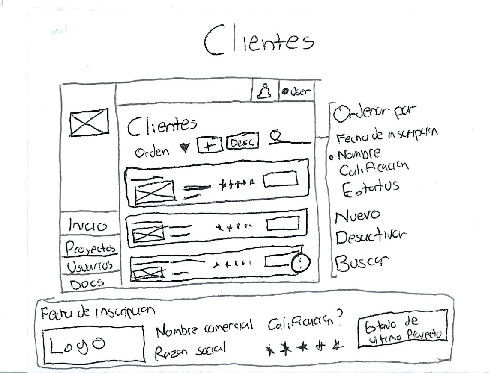
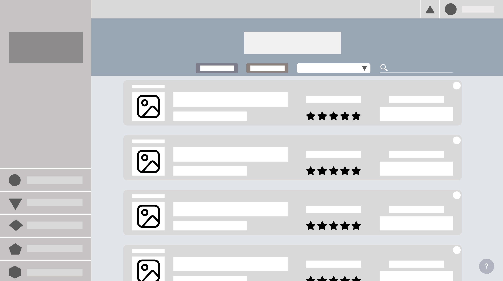
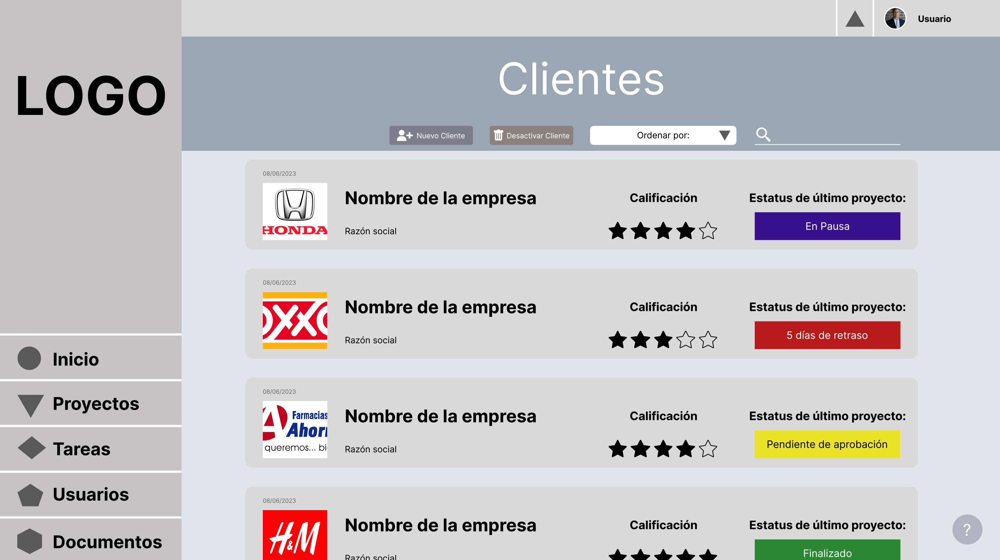
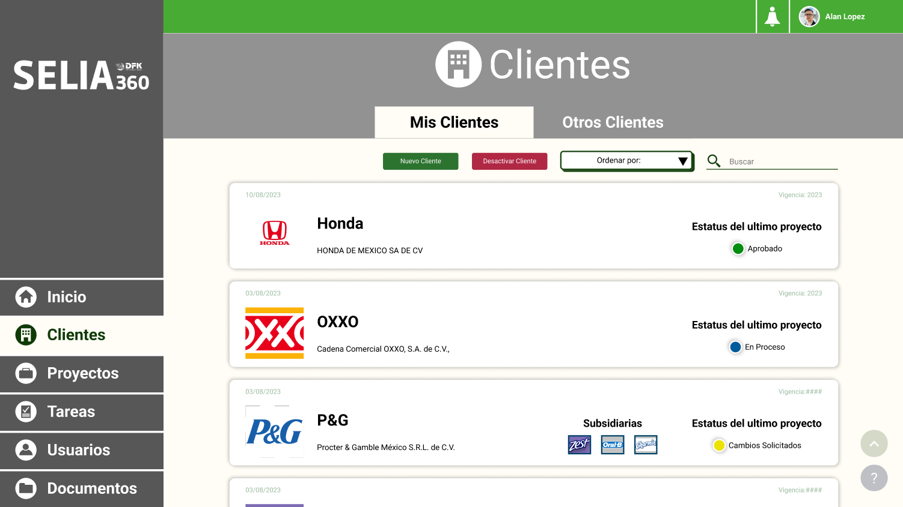
El bocetaje solo tiene la intención de plasmar de manera rápida y comprensiva los componentes generales que abarcaran el sistema. Esto para medir el tamaño y alcance del sistema por completo. Básicamente es ver la imagen completa sin concentrarse demasiado en los detalles.
A pesar de que los textos finales no estaban del todo definidos, el tamaño promedio de la tipografía fue seleccionada desde un principio por lo cual su posición en el espacio no presentaba una amenaza para el diseño final.
La decisión de usar (en su mayoría) colores neutros es con la intención de que la interacción sea lo más pura posible ya que este iba a ser el escenario en el cual se pondría posteriormente a prueba todas las interacciones básicas.
El acomodo de clientes podía ser diferente según lo elegido: Alfabéticamente, por último, inscrito, por estado de último proyecto o por estado actual del cliente.
 Foto de Arlington Research en Unsplash
Foto de Arlington Research en Unsplash
Tras realizar el diseño de los Wireframes hasta los de media fidelidad, fue entonces que se realizaron pruebas de usabilidad para poner a prueba la ergonomía, claridad conectividad y opciones que se habían integrado a la plataforma hasta ese punto.
Se realizaron pruebas a 10 integrantes de la firma (de diferentes jerarquías) y se les dio a realizar 5 a 7 diferentes tareas. Se cronometrizo las pruebas y se apuntó las veces que ayuda externa fue necesaria.
Al finalizar todas las preguntas, se pidió una reseña de la plataforma y la libertad de explorar la plataforma de manera libre para experimentar todas sus funcionalidades.
Esta experiencia me permito poner a prueba el diseño de interfaz y experiencia de usuario sin invasión por colores de la identidad grafica de la plataforma. Al ponerlo a prueba descubrí que los conceptos básicos adaptados e inspirados en otras plataformas ayudaron a que las tareas predefinidas se pudieran realizar de manera directa y comprensiva. Sin embargo, también fue requerido algo de flexibilidad, ya que en un intento de que todo tuviera un diseño cohesivo los diferentes módulos carecían de individualidad y tendían a ser confusos, tome la decisión de darle un diseño único a cada uno y así la exploración de diversos módulos fue clara y concisa.
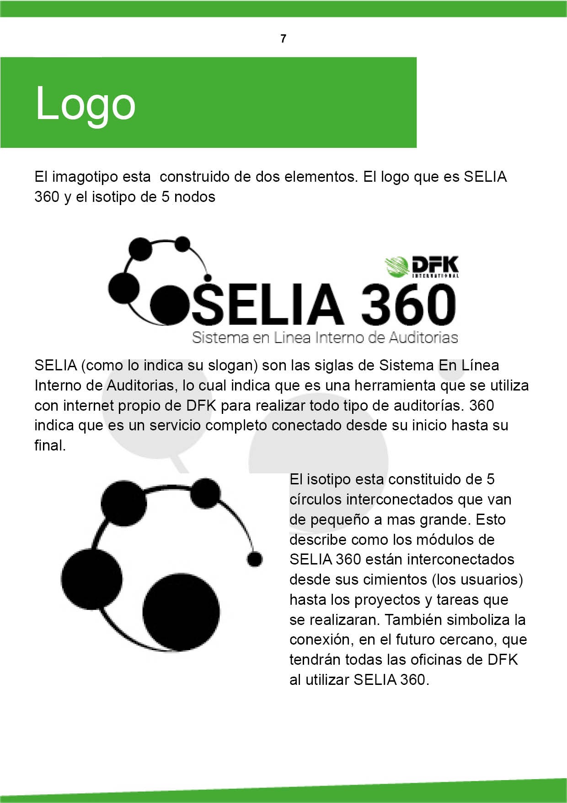
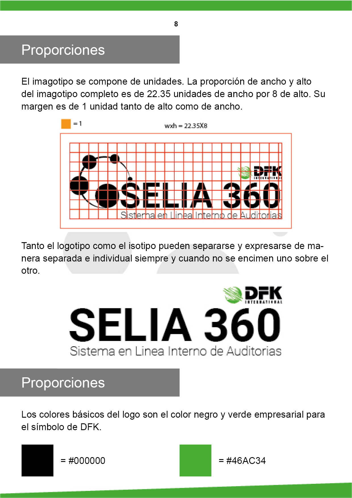
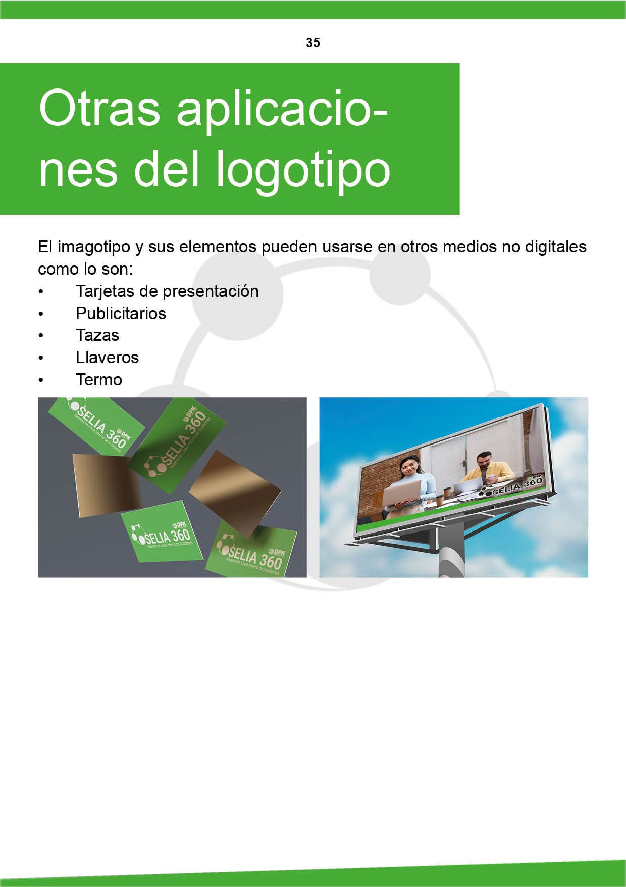
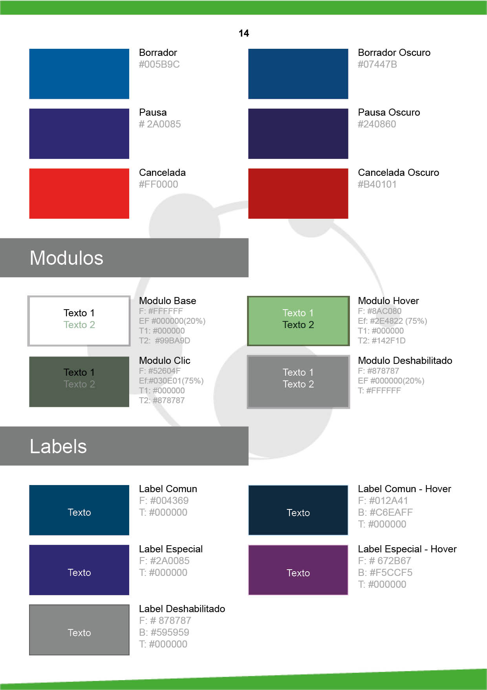
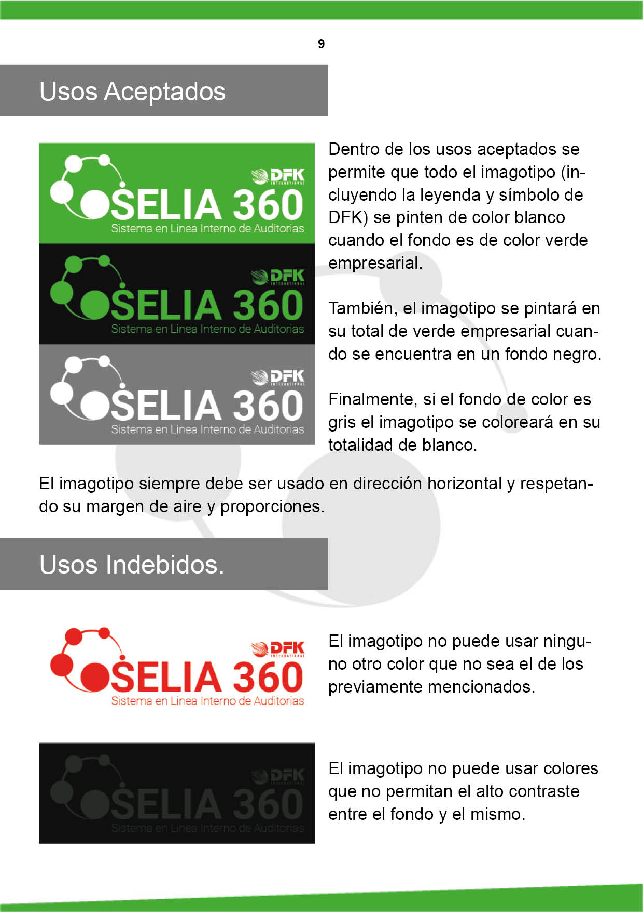
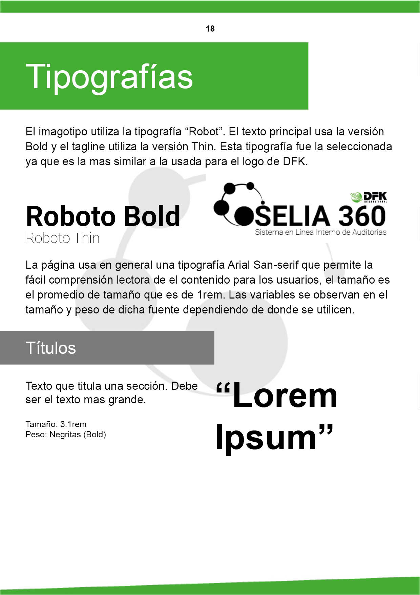
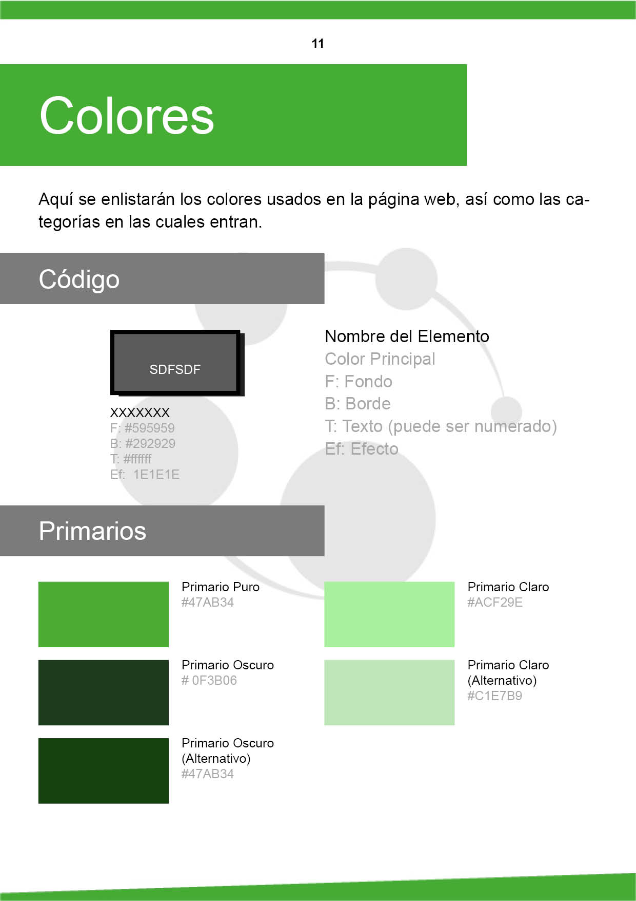
8 meses
Diseño e implementación
100%
Integración de toda la oficina antes del primer año
+35%
Incremento de productividad en el primer año
Si deseas ver una infografía con todo el proceso desarrollado, da clic aquí y visita mi Behance.
Infografía en Behance.
Alternativamente, entra a este link para ver una video guía de todo el sistema.
Video guía en Youtube
Proyectos
Contacto: